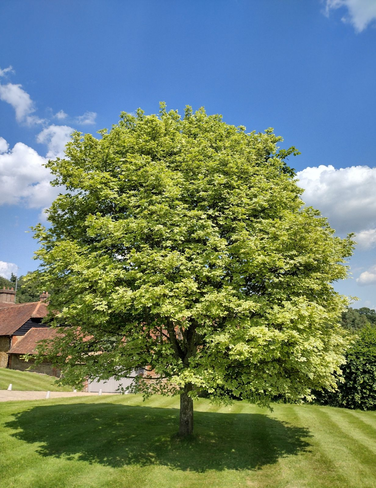
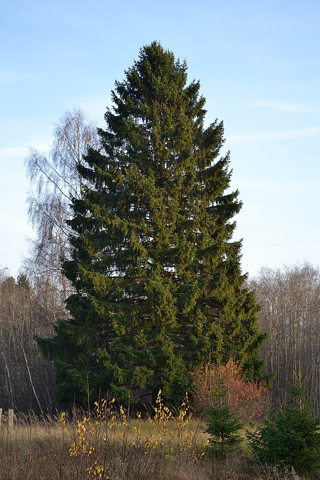

Current Koppen Climate Zone: Dfa
Hot summer humid continental: four distinct seasons, large seasonal temperature differences. Warm to hot (often humid) summers, freezing winters. Even precipitation throughout year, can have dry season.
Projected Koppen Climate Zone in 2100: Dfa
Still Dfa, but warmer and wetter.
2023 Population: 425,115.
Average SUHI daytime: 1.38°C
Average SUHI nighttime: 0.35°C
Climate in 2100 Similar to current Springfield, IL
Urban Trees Common in Springfield,IL / Dfa
Acer saccharum (Sugar maple)

Acer platanoides (Norway maple)

Acer rubrum (Red maple)

Picea abies (Norway spruce)
Picea glauca (White spruce)

Quercus rubra (Northern red oak)
Acer saccharinum (Silver maple)

Tsuga canadensis (Eastern hemlock)
Malus spp (Crabapple)

Quercus alba (White oak)